Нохчийн мотт — чеченский интерфейс
Полная поддержка чеченского языка в интерфейсе: полки («Доьшуш ду», «Деша лаьа», «ДӀадешна»), меню, цитаты и оглавления переведены и вычитаны по национальному корпусу без машинных ошибок.
WayBooks — читалка без магазина, без подписки и без облака: 104 полных текстов уже лежат внутри приложения, интерфейс на русском и чеченском языках, а свои книги можно докинуть файлами. Всё работает в самолёте, в метро и в горах.
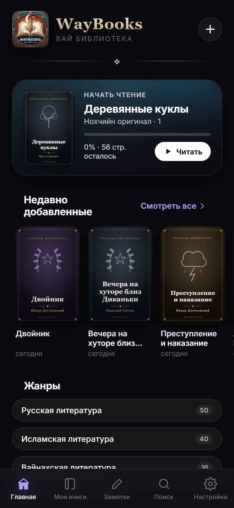
Не «ещё одна читалка», а конкретные вещи, которые видно при первом же открытии.
Полная поддержка чеченского языка в интерфейсе: полки («Доьшуш ду», «Деша лаьа», «ДӀадешна»), меню, цитаты и оглавления переведены и вычитаны по национальному корпусу без машинных ошибок.
Каждая книга — произведение целиком, разбитое на главы. Никаких «глава 1 из 3», демо-заглушек и кусков из превью магазина.
Ни одного запроса наружу во время чтения. Библиотека, прогресс, закладки и настройки живут в памяти телефона.
Файл добавляется прямо в приложение — с оглавлением, обложкой и автором там, где они есть в формате. Прогресс по импортированным книгам сохраняется.
У каждой книги — собственная векторная обложка в едином стиле: орнамент по жанру, золотая рамка, название целиком внутри рамки. Полка выглядит полкой, а не свалкой превью.
Светлая, сепия, тёмная и чёрная. Кегль в пунктах, гарнитура, межстрочный интервал и поля — настраиваются и запоминаются для каждой книги отдельно.
«Стр. 42 из 318» считается по реально свёрстанным полосам, а не по среднему арифметическому. Закладки и оглавление — в один тап. Заметка рождается из текста: держишь палец на фразе, тянешь на соседние предложения — цитата ложится в заметки книги уже с привязкой к месту.
Три жанра, 17 подкатегорий, от русской классики до вайнахских сказок и исламских трактатов.
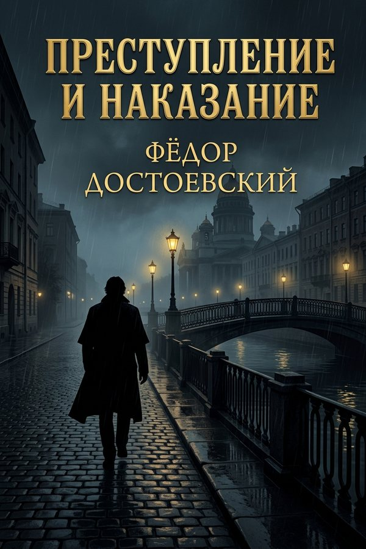
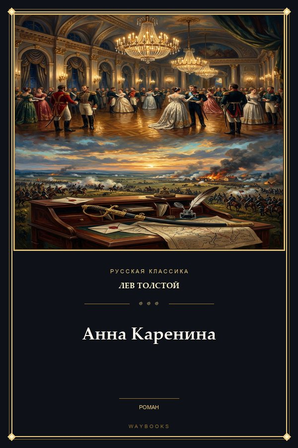
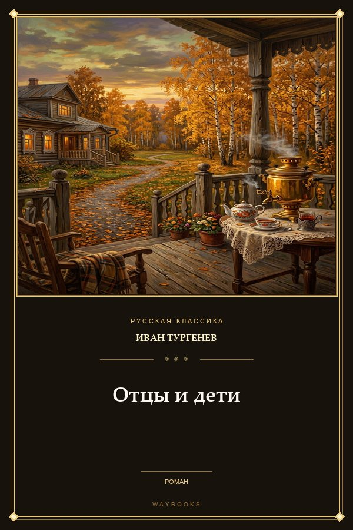
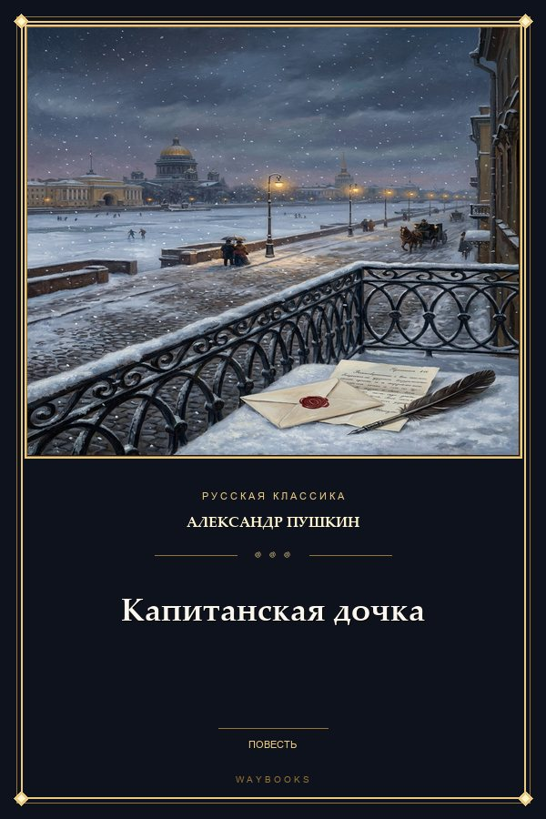
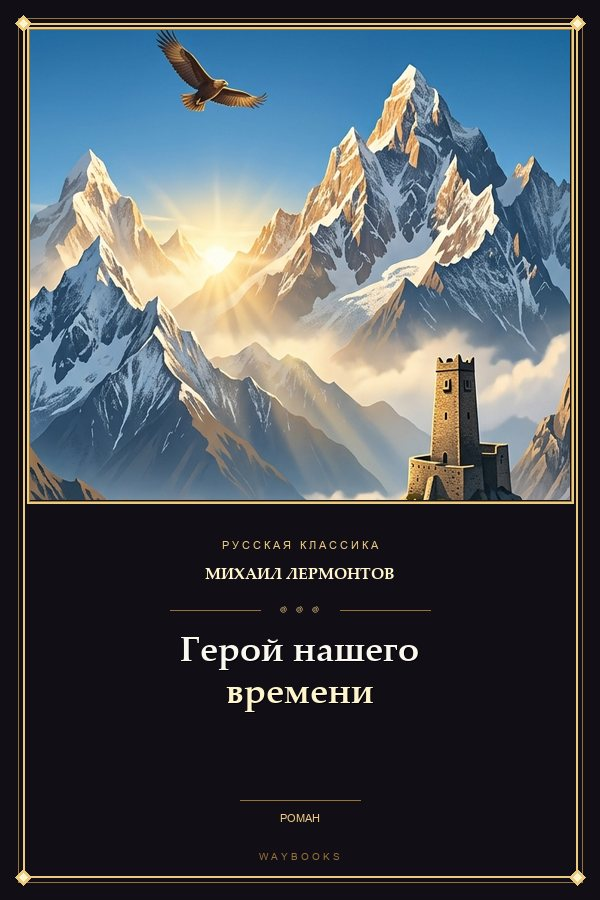
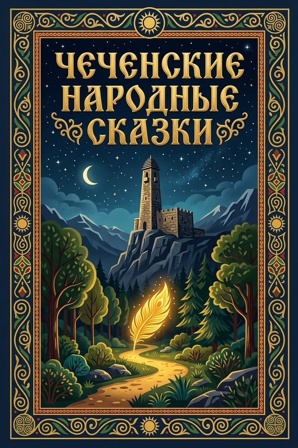
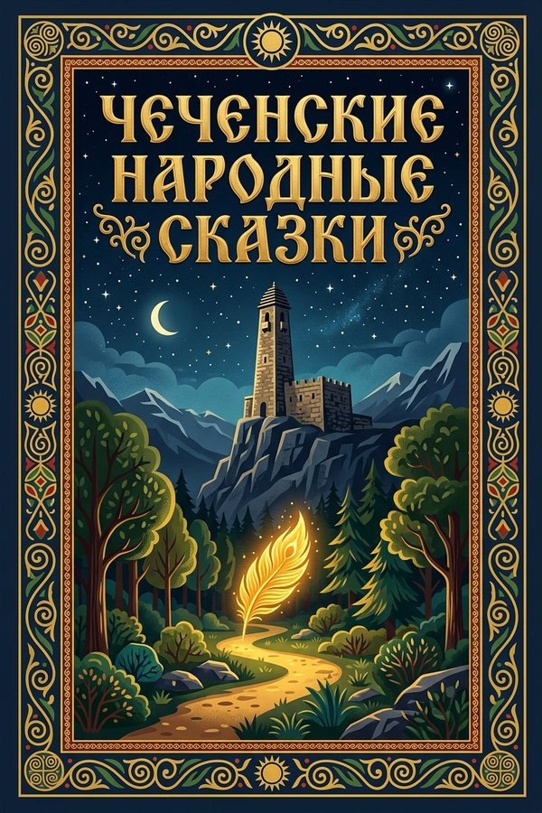
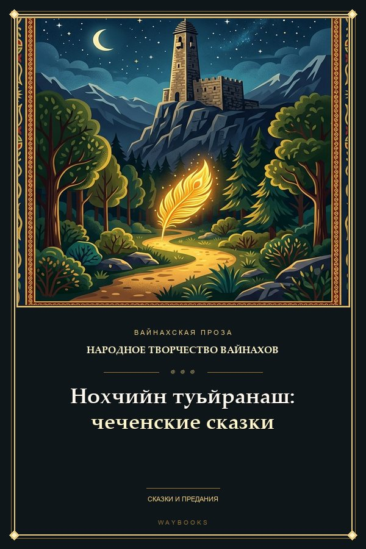
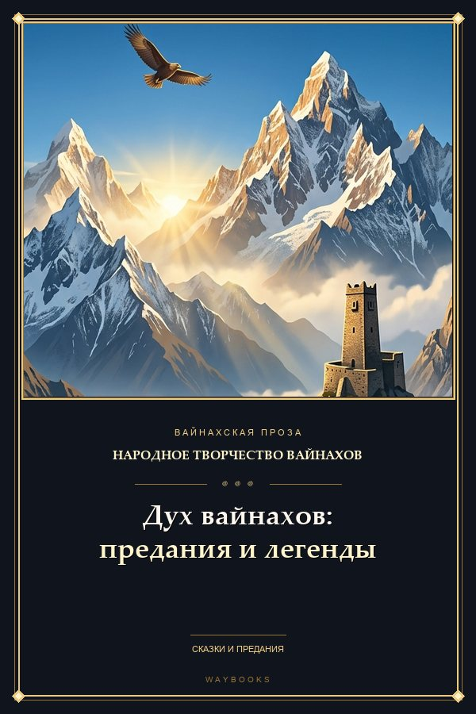
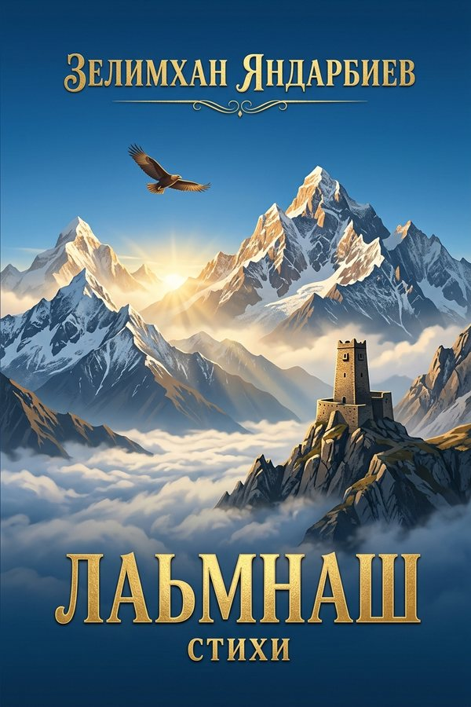
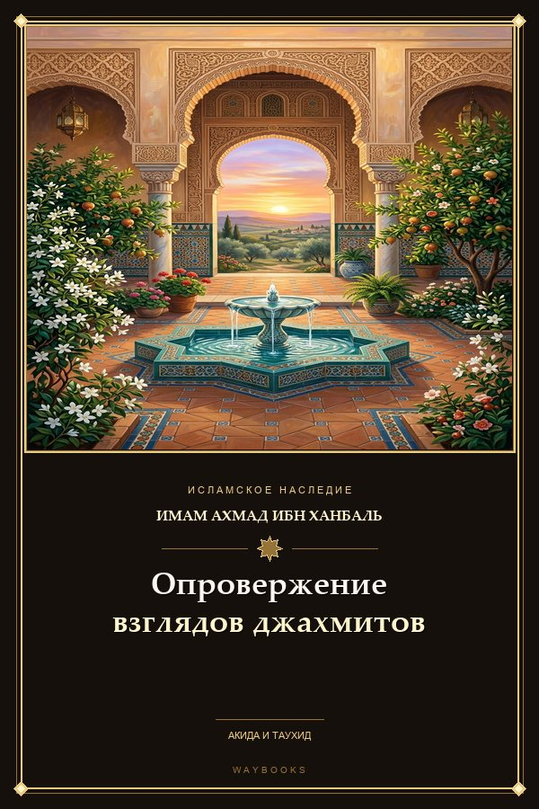
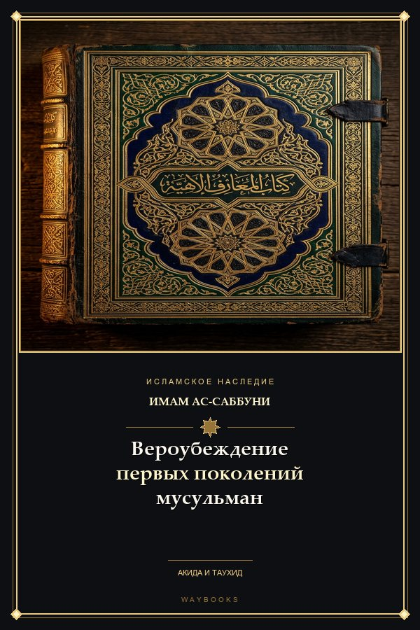
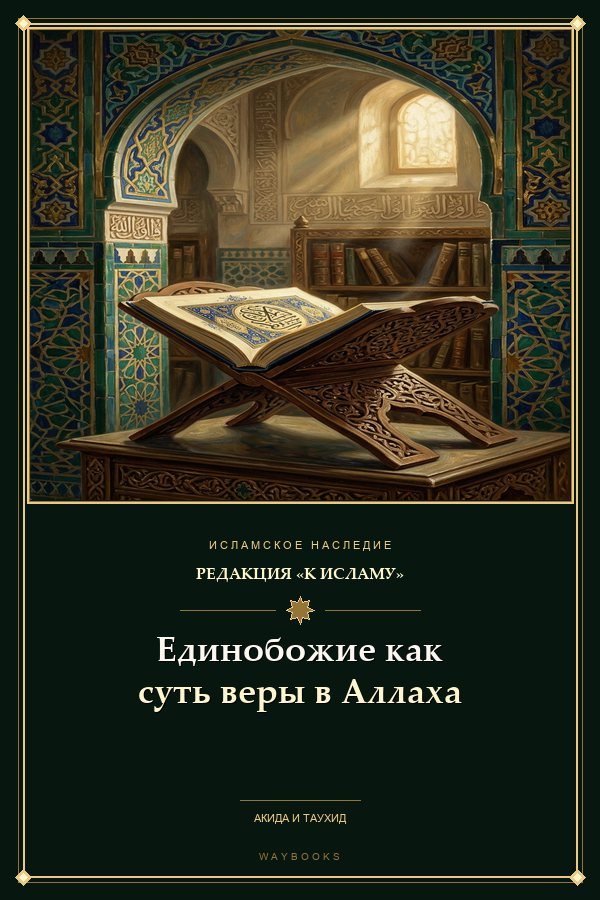
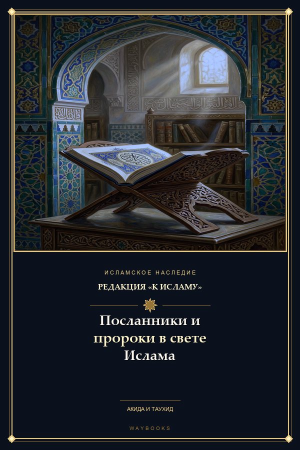
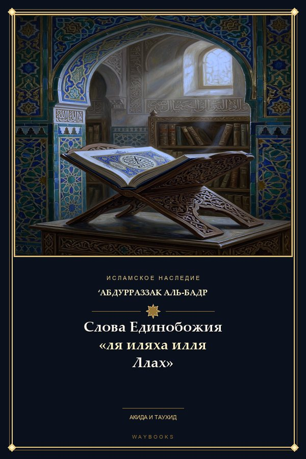
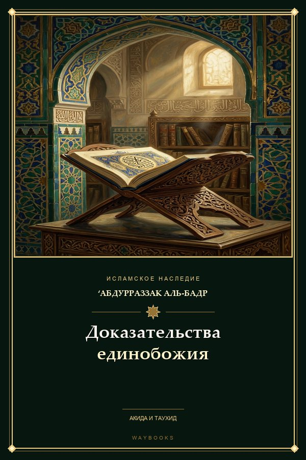
Обложки на этой полке — настоящие, из приложения. Их рисует сборщик библиотеки, поэтому они не кончаются там, где у магазина закончились превью.
Приложение не из Google Play: ставится одним файлом за минуту.
Нажмите «Скачать на Android» — файл WayBooks-1.4.apk ляжет в папку «Загрузки».
При первом запуске система спросит разрешение на приложения из «неизвестных источников» — подтвердите для браузера или «Файлов».
Библиотека загрузится при первом старте: 104 книг, офлайн, без регистрации и аккаунта.
Коротко о том, что спрашивают чаще всего.
Нужен, чтобы скачать APK. Дальше приложение не делает ни одного запроса: тексты, обложки и настройки лежат внутри. Проверено — во время чтения наружу не уходит ничего.
Да. Встроенная библиотека собирается из текстов, а не из описаний: у каждого произведения есть все главы, а издательский аппарат — примечания, послесловия, колонтитулы, списки литературы — вырезается. Если текст приходит битым (плохая оцифровка, дубль другой книги, список уроков вместо текста), сборщик такую книгу просто не выпускает.
Нет. Обновление ставится поверх тем же ключом, база приложения остаётся на месте. Если в новой сборке поменялся текст книги, она перечитывается по контрольной сумме, а место чтения сохраняется там, где позволяет разбивка.
Можно: EPUB, FB2, PDF и обычный TXT добавляются прямо в приложении, попадают на полку «Добавленные книги» и читаются так же, как встроенные — с оглавлением, темой и сохранением позиции.
APK весит 19.5 МБ, и почти весь объём — тексты и обложки библиотеки. После установки книги лежат в памяти приложения; на телефоне с 2 ГБ свободного места хватает с запасом.
Нет, и это осознанно: читалка офлайн, без аккаунтов и облаков. Свои файлы можно перенести вручную, встроенная библиотека есть в каждой копии приложения.
Один файл — и в телефоне 104 книг, которые открываются где угодно, даже без сети.
Скачать на Android